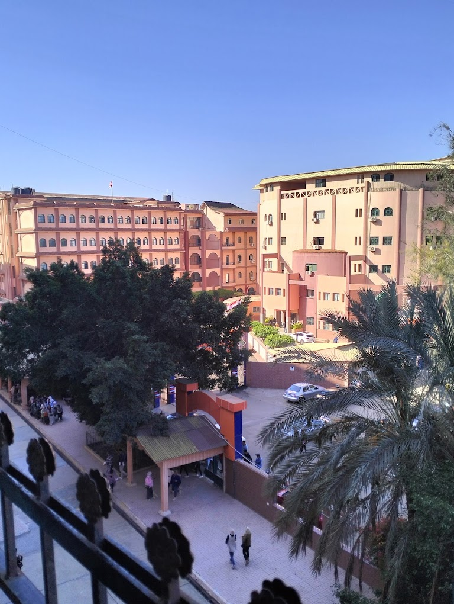

من نحن
نحن مجموعة من طلاب وطالبات معهد الدلتا العالي للحاسبات

الهدف من المشروع
يهدف هذا الموقع إلى تزويد الزوار بمعلومات مفصلة حول أهم المحاصيل الزراعية في مصر، بما في ذلك الحبوب والفواكه والخضروات والقطن، بالإضافة إلى شرح أهمية الصادرات الزراعية للاقتصاد المصري وتأثيرها على حياة المزارعين والمجتمعات المحلية. وسوف يتم توفير العديد من البيانات الإحصائية والرسوم البيانية التي توضح أداء قطاع الزراعة في مصر وتطوره عبر السنوات، بالإضافة إلى معلومات عن المشاريع الحكومية والخاصة المتعلقة بتحسين جودة المنتجات وزيادة الإنتاجية. وبهذا الموقع، ستتمكن من فهم الدور الحيوي الذي يلعبه القطاع الزراعي في اقتصاد مصر وأهمية الصادرات الزراعية في تحقيق النمو الاقتصادي والتنمية المستدامة.